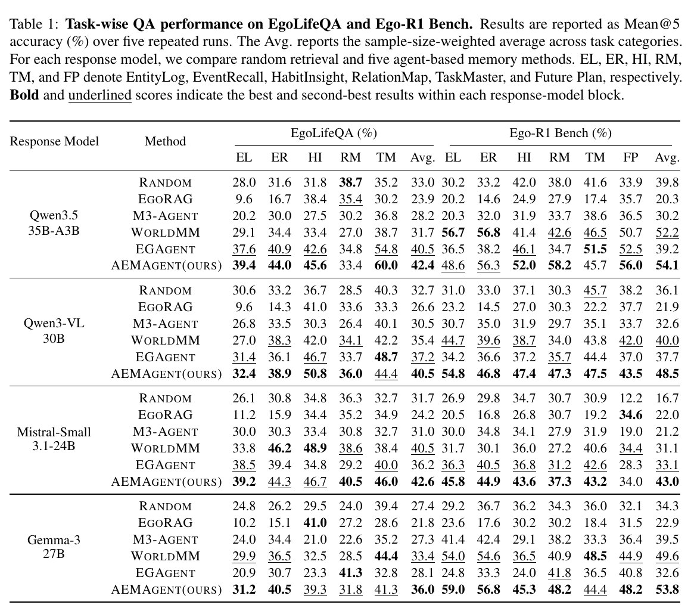
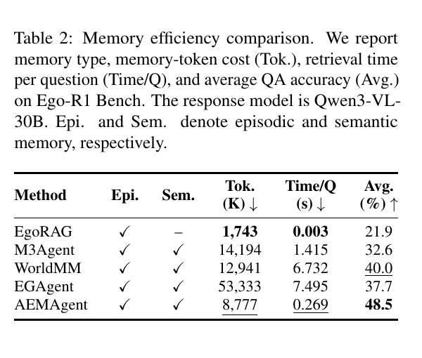

2026 - 至今
面向 Days-level 超长视频的主动记忆 Agent
面向第一视角超长视频理解任务，研究 Agent 的长期记忆形成、动态检索与压缩问题。提出 Active Explore Memory Agent，在探索长视频的过程中主动写入、检索、压缩并更新记忆。
EMNLP 2026 在投
在 4 种响应模型下均取得最佳整体准确率；使用 Qwen3-VL-30B 时，Ego-R1 Bench 平均准确率达到 48.5%，每个问题的记忆检索时间仅为 0.269 秒。


ACM MM Demo 在投